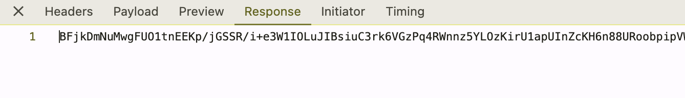
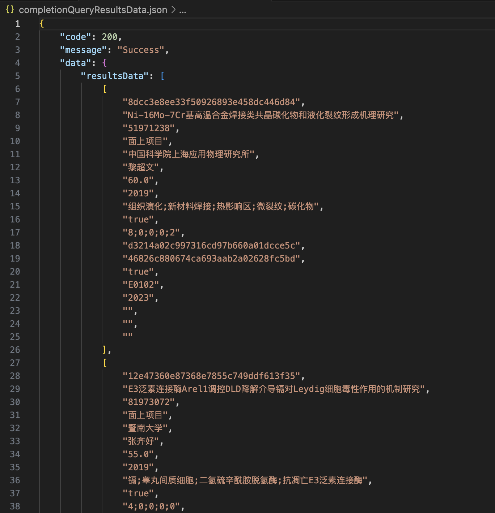

NSFC爬虫练习
需求
从国家自然科学基金大数据知识管理服务门户爬取论文数据。
搜索API
- 打开浏览器的开发者工具（如 Chrome 的 F12）；
- 在网络（Network）选项卡中，监控搜索的请求；
- 找到接口()[https://kd.nsfc.cn/api/baseQuery/completionQueryResultsData]；
- 其请求体如下：
{"code":"A01","fuzzyKeyword":"","complete":true,"isFuzzySearch":false,"conclusionYear":"2020","dependUnit":"","keywords":"","pageNum":0,"pageSize":10,"personInCharge":"","projectName":"","projectType":"218","subPType":"","psPType":"","ratifyNo":"","ratifyYear":"","order":"enddate","ordering":"desc","codeScreening":"","dependUnitScreening":"","keywordsScreening":"","projectTypeNameScreening":""}需要用到的字段只有：
code // 申请代码
conclusionYear // 结题年度
projectType // 资助类别- 观察其返回内容：

为一串无规律的长字符串，初步判断是经过了某种加密；
解密
页面的HTML文件：
<body>
<noscript>
<strong>We're sorry but 国家自然科学基金大数据知识管理服务门户 doesn't work properly without JavaScript enabled. Please enable it to continue.</strong>
</noscript>
<div id="app"></div>
<script src="/js/chunk-vendors.559d99e0.js"></script>
<script src="/js/app.17b88e26.js"></script>
</body>在网页的 JavaScript 文件中，尝试寻找相关的解密代码，最终在app.17b88e26.js中找到以下内容（注释为后期补充）：
function g(e) {
// 定义密钥
var t = p.a.enc.Utf8.parse("IFROMC86");
// 使用 DES 解密方法
var n = p.a.DES.decrypt(
{
ciphertext: p.a.enc.Base64.parse(e) // 解析 Base64 编码的密文
},
t, // 解密密钥
{
mode: p.a.mode.ECB, // 使用 ECB 模式
padding: p.a.pad.Pkcs7 // 使用 PKCS7 填充方式
}
);
// 将解密后的内容解析为 UTF-8 字符串并转为 JSON
return JSON.parse(n.toString(p.a.enc.Utf8));
}使用 Python 的 pycryptodome 库来实现解密：
pip install pycryptodomefrom Crypto.Cipher import DES
from Crypto.Util.Padding import unpad
import base64
import json
def decrypt_des_ecb(ciphertext):
# 密钥
key = b"IFROMC86"
# Base64 解码
encrypted_data = base64.b64decode(ciphertext)
# 初始化 DES 解密器
cipher = DES.new(key, DES.MODE_ECB)
# 解密数据并移除填充
decrypted_data = unpad(cipher.decrypt(encrypted_data), DES.block_size)
# 解密后的字符串转为 JSON 格式
return json.loads(decrypted_data.decode('utf-8'))对网页发送请求，成功得到解密后的JSON文件：

本博客所有文章除特别声明外，均采用 CC BY-NC-SA 4.0 许可协议。转载请注明来源 YokumiのBlog！